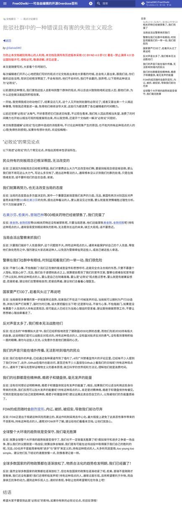

Winit420
@winterfruit_1
@SalviaSWC 66666还有论持久战

鼠尾草～🌿
@SalviaSWC
FOW评论文《批驳社群中的一种错误且有害的失败主义观念》
平常时候看得出来、关键时刻站得出来、危难关头豁得出来的人，才是真正的ODer。
无论外部环境如何变化，我们FOW都将坚定信心、保持定力，集中精力办好自己的事，为大家树立好的榜样哦🥹
图片似乎有点糊，文字版链接：https://t.co/9QMVKgGSqO https://t.co/Rxm9TpRJmH